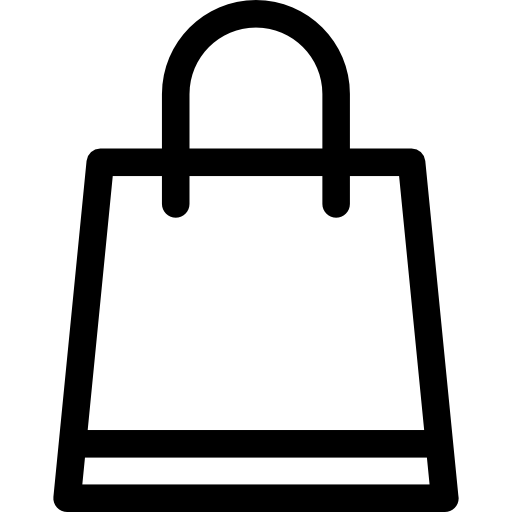
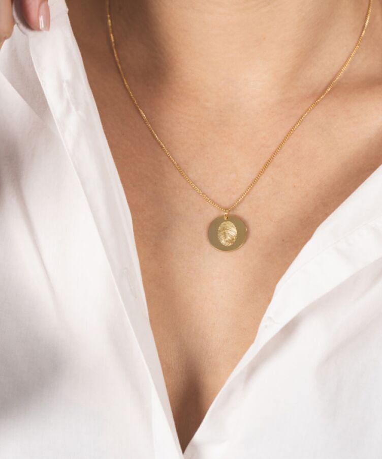
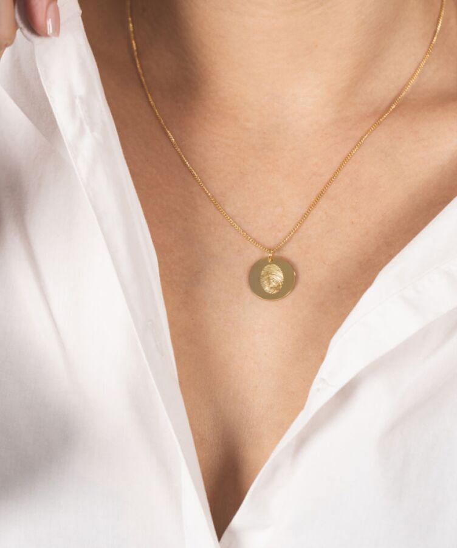

FREE SHIPPING ABOVE 500


- 
FREE SHIPPING ABOVE 500

 

Sylvie Coin Necklace
Vanaf 199 euro
Birhtstone Ring
Vanaf 45 eurp

Anne & Esther zijn Vedder & Vedder begonnen vanuit een behoefte om gepersonaliseerde sieraden te maken, persoonlijke sieraden met een eigen verhaal. Het resultaat zijn collecties bestaande uit custom sieraden, van armbanden met naam, kettingen met een initiaal tot aan ringen met een (geboorte) steen - en nog veel meer.
OVER ONSAankomende zaterdag 21/11 om 12.00 uur opent onze Vedder & Vedder Giftshop haar deuren!
Shop nu de cadeaus voor jouw dierbaren en jezelf. Bezoek ons aan de Honthorststraat 2A in Amsterdam!
Vedder & Vedder sieraden worden met liefde gemaakt en gepersonaliseerd in ons eigen atelier in Amsterdam. Alles is mogelijk als het om een persoonlijk sieraad gaat; van de vingerafdruk van een dierbare op een ring tot een naamketting of een ketting or armband met letters of initialen. Gepersonaliseerde sieraden met een persoonlijk verhaal. Niets is ons te gek!
Birthstone Huggie Earring
Geef een beetje zelfliefde en schenk jezelf onze Single Birthstone Huggie Earring! Abbey Hoes is al fan!